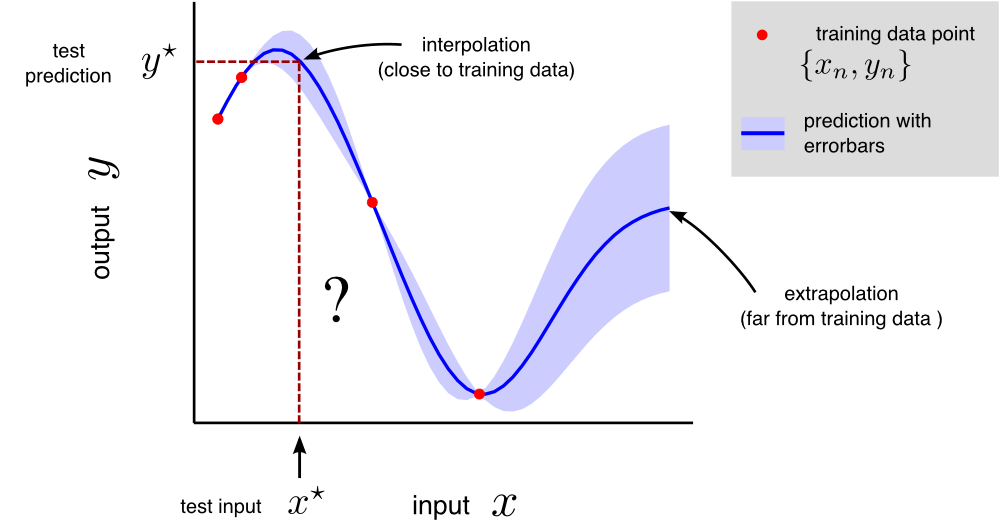

Regression¶
Regression is a class of supervised machine learning tasks in which the aim is to predict a real valued output \(y^\star\), given an input vector \(\mathbf{x}^\star\) using a training set of input-output pairs \(\{\mathbf{x}_n, y_n\}_{n=1}^N\). Each vector \(\mathbf{x}_n\) represents a point in some \(D\)-dimensional space, where \(D\) is the number of input parameters being measured.
Here’s a cartoon regression task for a one-dimensional dataset, i.e. each \(\mathbf{x}_n\) is a one-dimensional vector, or just a scalar value. Often the full solution to a regression task involves returning to the user a best guess for \(y^\star\) along with a measure of uncertainty, the latter being important for decision making.

Regression encompasses many different types of input e.g. they can be scalar or multi-dimensional; real valued or discrete. Regression problems lie on a sliding scale from those that involve interpolation (the required predictions are typically close to the training data) to extrapolation (the required predictions are typically far from the training data). Example regression problems include:
Application |
Inputs |
Outputs |
|---|---|---|
computer aided drug design |
representation of molecule |
biological activity of molecule |
solar power supply forecasting |
time, physical models, satellite images |
solar power supply |
informing health care policy |
health care center characteristics |
patient treatment outcomes |
image super resolution |
low resolution image |
high resolution image |
system identification |
system’s state at time \(t-1\) |
system’s state at time \(t\) |
The last two examples above are multi-output regression problems which involve predicting a vector of real valued outputs, rather than just a single scalar output.
In regression, the predictions themselves may not always be the central focus. For example, in the ‘informing health care policy’ example, the goal is to assess the contribution from different input variables (health centre funding level, availability of treatments, population demographic etc.) on the treatment outcome.
Regression also serves as a good introduction to several cross-cutting concepts in inference and machine learning including generative models, maximum likelihood estimation, overfitting and probabilistic inference.
Outline of subsequent sections¶
Linear regression: Linear regression, least squares and maximum likelihood fitting
Non-linear regression: Non-linear regression using basis functions
Overfitting in non-linear regression: What is overfitting, diagnosis using validation sets
Regularised non-linear regression: Using regularisation to mitigate overfitting, interpretations of regularisation as MAP inference
Bayesian non-linear regression: Bayesian approaches to regression that return uncertainty in the parameter estimates
Visualising Bayesian linear regression: Online learning: Visualising how the posterior distribution evolves as data arrive